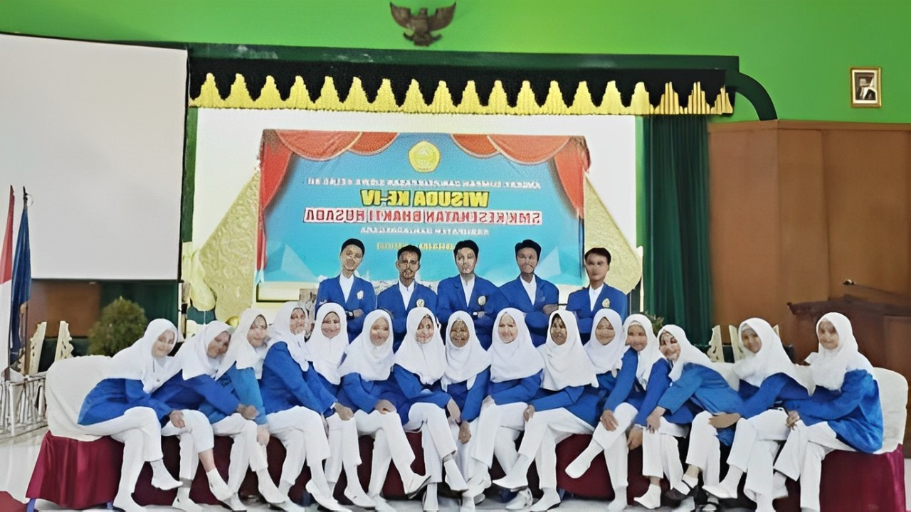
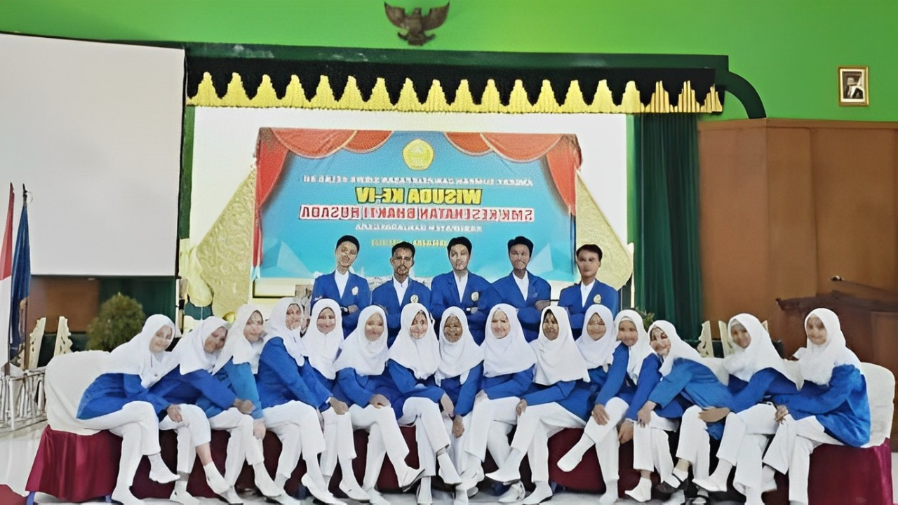

Hai kamu, Selamat Datang Di Bhakti Huasada
Web ini, adalah web official SMK Kesehatan Bhakti Husada
Web ini, adalah web official SMK Kesehatan Bhakti Husada
SMK FARMASI BHAKTI HUSADA BANJARNEGARA adalah salah satu satuan pendidikan dengan jenjang SMK di Banjarnegara. Beralamat di Dusun Purwasari, Klampok, Kec. Purwareja Klampok, Kab. Banjarnegara, Jawa Tengah
1. Meningkatkan Kualitas organisasi dan menejemen sekolah dalam menumbuhkan semangat keunggulan dan
kompetitif
2. Meningkatkan kualitas kegiatan belajar mengajar (KBM) dalam mencapai kompetensi siswa dengan metod PAKEM
3. Meningkatkan kualitas kompetensi guru dan karyawan dalam mewujudkan standar pelayanan minimal (SPM)
4. Meningkatkan kuantitas dan kualitas sarana dan prasarana pendidikan dalam mendukung penguasaan IPTEK
5. Meningkatkan kualitas SDM dan kualitas pembinaan kesiswaan dalam mewujudkan IMTAQ dan sikap
6. Meningkatkan kemitraan dengan DU/DI sesuai demand driven
7. Meningkatkan kualitas pengelolaan unit produksi dalam menunjang SDM
8. Memberdayakan lingkungan sekolah dalam mewujudkan wawasan wawasan wiyatamandala